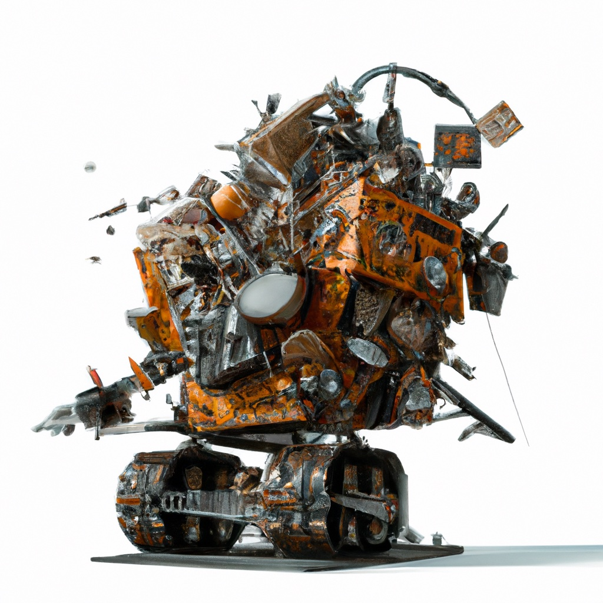

2.2. Actions for Sorting Trash#

Robots change the world through their actions. Action models capture their salient aspects.
{kind=link}
Robots decide how to act in the world by reasoning about how their actions can be used to achieve their goals, given the current state of the world. At a high level, actions can be represented by symbolic descriptions of their effects (changes that will occur in the world state when the action is executed) and by their preconditions (things that must be true in the current state in order to execute the action). The robot’s goals can be encoded as a symbolic description of the desired world state, or, as we will do now, by assigning a cost executing an action in a particular world state. Note that assigning a cost to an action is equivalent to assigning a reward (merely multiply the cost by -1 to obtain a reward). If we use a cost-based approach, we generally frame the planning problem as a decision problem: choose the action that minimizes cost. If we are interested in long time horizons, we would choose the sequence of actions that minimize cost over the chosen time period. If there are uncertainties, either in the world state or in the effects of actions, we would minimize the expected value of the cost.
In this section, we will consider only the problem of evaluating the cost of a single action based on limited knowledge of the world. In particular, we will assume that the robot has only the prior probability distribution on categories described in the previous section. We will address the more general problem of planning (i.e., choosing which actions to apply in the current context) later in the chapter.
2.2.1. Modeling Actions and Their Effects#
For a trash sorting robot, the destination bin is the most important aspect of an action.
For our trash sorting robot, we will define four actions, each of which can be executed when there is an item of trash in the work space (i.e., there are no preconditions for the actions). The first three actions use the robot manipulator to move an item of trash to one of three bins: glass, metal, or mixed paper. The fourth action is a nop, which corresponds to the robot simply allowing the item to pass through the work space, to be processed, for example, by a human worker (note that “nop” is a shorthand used in many programming languages to denote “no operation”).
We assign labels to these actions as follows:
\(a_1\): put in glass bin
\(a_2\): put in metal bin
\(a_3\): put in mixed paper bin
\(a_4\): nop (let the object continue, unsorted)
and each of these actions can be applied at any stage of execution.
If the robot had perfect knowledge of the world state (i.e., if the robot always knew exactly the category of the item in the work space), choosing an action would be simple: place paper and scrap cardboard in the paper bin; place cans and scrap metal in the metal bin; place bottles in the glass bin. The nop action would never be used. But what if the robot’s knowledge of the world state is uncertain? Suppose, for example, that it sometimes mistakes scrap metal for cardboard. Placing scrap metal in the paper bin could lead to significant damage to trash processing equipment, possibly requiring the facility to shut down completely while repairs are made. In contrast, if the robot places paper into the metal bin, serious damage is unlikely, and the cost of this wrong decision would likely be much smaller.
In order to make informed decisions about which action to take, the robot needs to have some quantitative way to evaluate the cost of executing the wrong actions. This begins by assigning a cost to each action, depending on the world state when the action is executed.
For this example, we will assign zero cost when the robot executes the correct action, and positive value costs when wrong actions are executed, depending on the severity of the consequence. We can encode these costs into a table using the following code.
categories = ["cardboard", "paper", "can", "scrap metal", "bottle"]
actions = ["glass bin", "metal bin", "paper bin", "nop"]
cost = np.array([[2, 2, 4, 6, 0],
[1, 1, 0, 0, 2],
[0, 0, 5, 10, 3],
[1, 1, 1, 1, 1]])
pd.DataFrame(cost, index=actions, columns=categories)
| cardboard | paper | can | scrap metal | bottle | |
|---|---|---|---|---|---|
| glass bin | 2 | 2 | 4 | 6 | 0 |
| metal bin | 1 | 1 | 0 | 0 | 2 |
| paper bin | 0 | 0 | 5 | 10 | 3 |
| nop | 1 | 1 | 1 | 1 | 1 |
Note that the cost of making the correct decision (e.g., placing cardboard into the paper bin) is zero, and the cost of wrong decisions is a positive number that reflects the damage done to processing machinery for the specific cases. Furthermore, we have assigned a unit cost to executing the nop action (i.e., letting the trash item pass, unsorted). This latter cost assignment depends, of course, of what happens at the downstream sorting stages, but we ignore such effects here.
If the robot knew the state of the world with certainty, planning would amount to merely choosing at each moment the action that minimizes the cost. For our trash sorting problem, this approach would uniquely define which action to take as a function of the world state. When the state of the world is uncertain, we can use probability theory to define a solution strategy.
2.2.2. Discrete Random Variables#
If the category is not known with certainty, then the cost of an action will be a random variable.
Suppose the robot takes the naive decision to always place trash in the paper bin. What can we say about the cost associated to this action? We can immediately conclude that the cost will take its value from the set \(\{ 0, 3, 5, 10\}\), since these are the only values that appear in the table of costs for this action. In the absence of any other information, this is really all that can be said about the cost that will be incurred by placing a newly arrived item of trash in the paper bin. But in our case, we have additional information in the form of the prior distribution on trash categories. Thus, we can view the cost of moving an item to the paper bin as a random quantity that takes its values from a finite set of numbers.
We can compute the probabilities for the various values of cost by examining the outcomes that lead to those costs. The probability of paper is 0.2 and the probability of cardboard is 0.3. In each of these cases, the cost is zero. Therefore, we can conclude that the probability of zero cost is 0.5. Similarly, since the probability of a can is 0.25, the probability is 0.25 that the cost will be 5; the probability that the cost will be 10 is 0.2; and the probability that the cost will be 3 is 0.05. And voilà, we have determined the complete probability distribution on cost, given that the robot always places items in the paper bin!
In probability theory, a random variable is defined as a mapping from the sample space to real numbers, \(X : \Omega \rightarrow \mathbb{R}\). We typically use upper case letters to denote random variables, and we typically write \(X\) instead of \(X(\omega)\). In this way, we deal directly with \(X\), treating \(X\) as a random quantity whose probability distribution is induced by the probability distribution on \(\Omega\). This is exactly what we did above, when we used the probability distribution on categories to infer the distribution on costs.
A discrete random variable is defined as a random variable that takes values from a finite (or even countably infinite) set. The probability distribution for a discrete random variable is called a probability mass function or PMF. The pmf for random variable \(X\) is typically denoted by \(p_X\) or simply by \(p\) when the context makes clear the random variable under consideration. Discrete random variables and pmf’s are key concepts in the development of probability theory, and they will be key in our treatment of uncertainty for robotics applications.
Let us denote by \(X\) the cost of moving an item of trash to the paper bin. We use lower case letters to denote values that can be taken by random variables; in this case \(x\) denotes a value taken by the random variable \(X\). The pmf \(p_X\) can be represented in tabular form as follows:
\(x\) |
\(p_X(x)\) |
|---|---|
0 |
0.50 |
3 |
0.05 |
5 |
0.25 |
10 |
0.20 |
We could apply this same approach for each of the possible actions, and then use the resulting PMFs to make decisions about which actions to apply. We will discuss such an approach to planning a bit later in this chapter.
2.2.3. Expectation#
For many robotics applications, we hope that the robot will operate for a long period of time. We might hope for our trash sorting robot to operate for weeks, months, or longer, placing many pieces of trash into bins over the course of its operation. Suppose again that the robot merely always chooses to place trash in the paper bin. What can we say about the cost that will accrue over the robot’s lifetime? With probability theory, we are unable to say anything definitive about a particular outcome; however, we can say things about average behavior over many trials. This is the concept of expectation in probability theory.
Suppose that the random variable \(X\) takes its values from a finite set, \(X \in \{ x_1, \dots , x_n \}\). The expected value of \(X\), which we denote by \(E[X]\) is defined by
For the example above, the expected value of cost, \(E[X]\), is given by
Note that we never really expect to see the cost \(3.4\). The term expected value is a technical term, defined by the equation above. The expected value is related to what we would expect to see if we took the average over many trials. As an example, if we roll a fair, six-sided die and let \(X\) denote the number of dots on the top face, it is easy to show that \(E[X] = 3.5\). Of course we will never roll a \(3.5\), but if we roll the die 100 times and take the average of those rolls, we would expect that average to be near \(3.5\). We will discuss this in more detail below.
In python, we can compute the expected cost for each action by merely multiplying the \(4\times5\) cost matrix with the \(5\times1\) PMF:
Category = VARIABLES.discrete("Category", categories)
category_prior = gtsam.DiscreteDistribution(Category, "200/300/250/200/50")
pretty(category_prior)
P(Category):
| Category | value |
|---|---|
| cardboard | 0.2 |
| paper | 0.3 |
| can | 0.25 |
| scrap metal | 0.2 |
| bottle | 0.05 |
cost @ category_prior.pmf()
array([3.2, 0.6, 3.4, 1. ])
The result is an array in which each entry corresponds to the expected cost for a specific action. Thus, this array encapsulates everything we know about the expected costs of applying the four possible actions. We will use this later in the chapter to form a basis for simple planning.
If it is not clear to you why this works, write out the expression for the matrix multiplication described above, and compare to the equations for the expected cost of each action.
2.2.4. Simulation by Sampling#
It is easy to demonstrate the relationship between expectation and the average over many trials - simply sample and average!
The code below computes the average cost over \(N\) samples for a specified action. Try various values for \(N\), and notice that as \(N\) increases, the average tends to be an increasingly better approximation of the expected cost.
# Sample N times, and evaluate the cost of executing the given action:
total_cost = 0
N = 100
action = 0
for i in range(N):
category = category_prior.sample()
total_cost += cost[action, category]
print(total_cost/N)
3.36
For example, one experiment with \(100\) samples yielded:
cost_estimate = [3.14, 0.6, 4.01, 1.0]
2.2.5. Probability Theory vs. Statistics#
Probability theory is the study of certain mathematical functions, while statistics are functions of data. The two are related, but different.
Probability theory and statistics seem to be concerned with the same kinds of ideas, but they are two very different fields of study.
Probability theory is the study of a certain class of mathematical functions (probability distributions). The modern, axiomatic approach to probability theory begins with three axioms, from which all other properties are derived:
For \(A\subseteq \Omega\), \(P(A) \geq 0\)
\(P(\Omega) = 1\)
For \(A_i, A_j \subseteq \Omega\), if \(A_i \cap A_j = \emptyset\), then \(P(A_i \cup A_j) = P(A_i) + P(A_j)\).
Probability theory does not consider the problem of how one might obtain the probability distribution \(P\). Probability theorists take this as a given, along with the axioms.
Expectation is a property of a probability distribution. For a discrete random variable \(X\) with \(\Omega = \{ x_1 \dots x_n\}\), \(E[X]\) (also called the mean, and often denoted by \(\mu\)) can be computed as above
The variance of a random variable, typically denoted by \(\sigma^2\), is merely the expected value of the squared difference between the random variable \(X\) and the mean. The variance is also a property of probability distributions, and it can be computed as
Note that the expressions for \(\mu\) and \(\sigma^2\) depend only on the probability distribution (in this case, the pmf \(p_X\)) and the values taken by the random variable \(X\).
A statistic is any function of data (including the identity function). Consider a set of measurements \(\{ z_1, \dots z_N \}\). The average of these values, often denoted by \(\bar{z}\), is a statistic, and it can be computed as
Likewise, the variance of the data, often denoted by \(\hat{\sigma}^2\) can be computed as
Note that the definitions of \(\bar{z}\) and \(\hat{\sigma}^2\) depend only on the data itself.
Certain similarities are immediately obvious between these two sets of definitions. The mean of a random variable seems similar to the average of a data set. The variance of a random variable seems similar to the variance of a data set.
In fact, if it happens that certain probability distributions do a good job of describing how the world behaves, then probability theory can provide a rigorous basis for a system of inference about data. As an example, if the data we observe behave according to the probability distribution \(p_X\), then the average of the data will tend toward the expected value of \(X\). This property can be written formally as the weak law of large numbers, which states that for any \(\epsilon > 0\), if \(\bar{z}_N\) denotes the average of a data set of size \(N\), then
i.e., the average of \(N\) data points will become arbitrarily close to \(\mu\) as \(N\) becomes large. This occurs with probability one, a nuance that we will not discuss here. This is one explanation for why simulation by sampling works, and why the results tend to improve with an increasing number of samples.
The weak law of large numbers is only the first of many theorems that formalize the connections between probability theory and statistics, but most all of these theorems express variations on a simple concept: as the size of a data set becomes large, the statistics of that data set will become increasingly good approximations for various properties of the underlying probability distribution from which the data set was generated. Therefore, using probability theory to reason about distributions can serve as a basis for inferential reasoning about the real world.
2.2.6. Summary#
In ths section we considered the foundational concept of robot actions, focusing on how robot systems can use actions to intervene in the physical world. For our very abstracted world state, we considered discrete, symbolic actions, and introduced probability theory to model the uncertain outcomes associated with each action. We introduced the notion of expectation to think about the average outcome of actions over time. And, we ended by contrasting probability theory with statistics, and how the weak law of large numbers bridges the gap between these two formalisms.